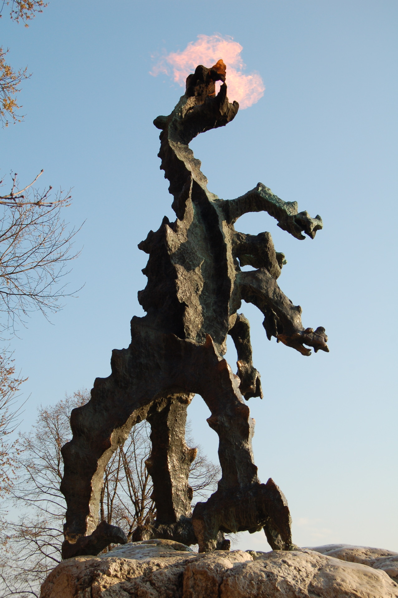
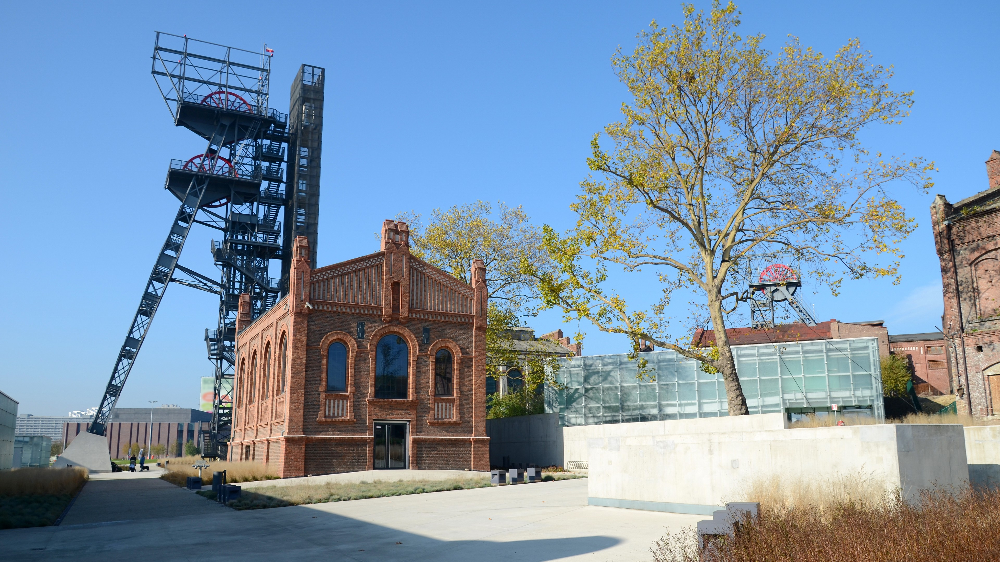

Województwo małopolskie – położone w południowej Polsce, ze stolicą w Krakowie. Jest jednym z najważniejszych regionów historycznych i turystycznych kraju. Znajdują się tu liczne zabytki, góry Tatry oraz popularne miejscowości wypoczynkowe, takie jak Zakopane.
Województwo śląskie – położone w południowej Polsce, ze stolicą w Katowicach. Jest jednym z najbardziej uprzemysłowionych i zurbanizowanych regionów kraju. Oprócz rozwiniętego przemysłu oferuje także atrakcyjne tereny rekreacyjne, m.in. Beskidy oraz liczne parki i obiekty kultury.

